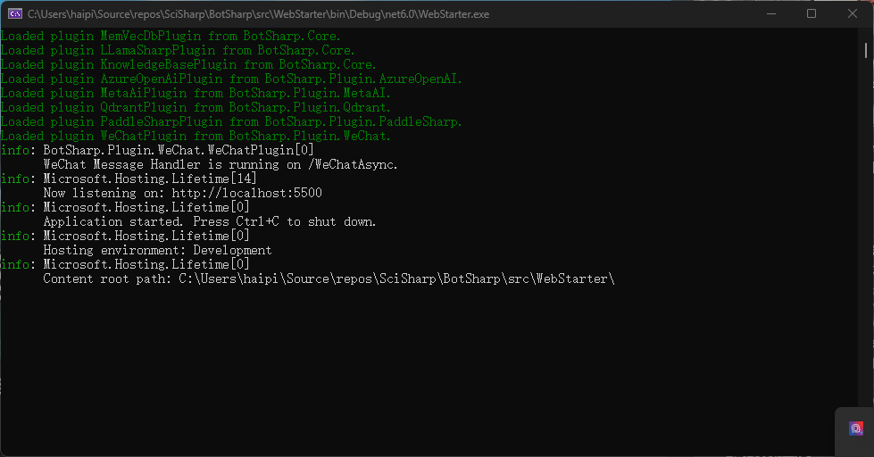
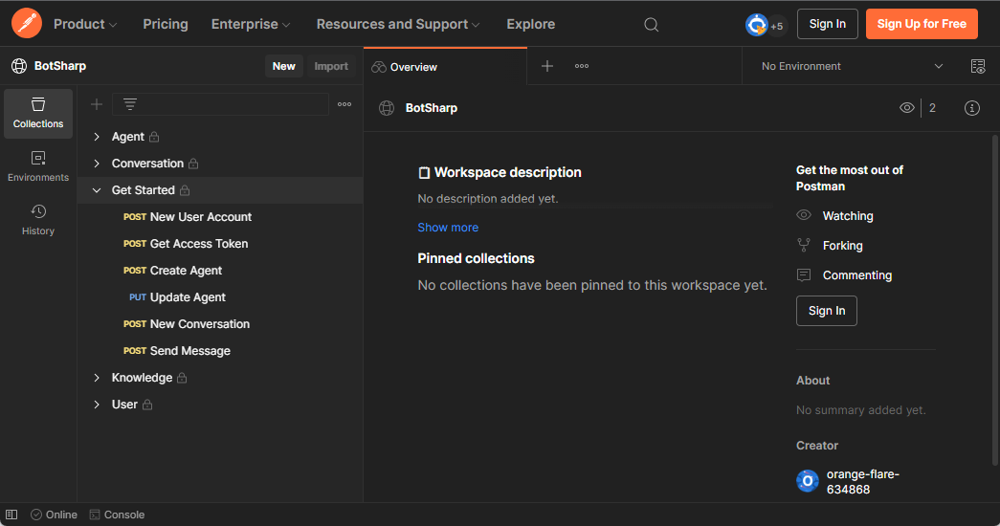

botsharp-doc
安装
BotSharp 严格遵循模块化设计原则，采用视图和逻辑分离的结构。它还提供了完整的 Web API 接口，以便与您自己的系统集成。在架构层面，Hook 和 Event 被设计用于不同的目的，可以在不更改内核的情况下扩展 Chatbot 的对话能力。
在开发模式下本地运行
如果您是 .NET 开发人员并希望开发扩展或修复 BotSharp 的错误，您可以按 F5 在调试模式下本地运行它。 确保安装 Microsoft .NET SDK 6.0+ 构建环境 使用 dotnet CLI 构建解决方案（首选）。
克隆源代码并构建
PS D:\> git clone https://github.com/SciSharp/BotSharp
PS D:\> cd BotSharp
PS D:\> dotnet build
更新配置
BotSharp 可以与多个 LLM 提供商一起工作。在您的项目中更新 appsettings.json。以下配置是将 Azure OpenAI 作为 LLM 后端
"LlmProviders": [
{
"Provider": "azure-openai",
"Models": [
{
"Name": "gpt-35-turbo",
"ApiKey": "",
"Endpoint": "https://gpt-35-turbo.openai.azure.com/",
"Type": "chat",
"PromptCost": 0.0015,
"CompletionCost": 0.002
},
{
"Name": "gpt-35-turbo-instruct",
"ApiKey": "",
"Endpoint": "https://gpt-35-turbo-instruct.openai.azure.com/",
"Type": "text",
"PromptCost": 0.0015,
"CompletionCost": 0.002
}
]
}
]
运行后端 Web 项目
PS D:\> dotnet run --project src/WebStarter

打开 REST APIs
您可以通过浏览器访问 http://localhost:5500/swagger 中的 API

使用 Postman 测试
我们公开分享了 Postman 的 API 集合，方便开发人员快速开发。 
到目前为止，您已经设置了 Bot 的运行和开发环境，但实际上还不能测试 Chatbot。下一步是关于如何 创建代理 并开始与 Chatbot 对话。
如果您只打算使用 REST API 与您的机器人交互，请忽略以下部分。
启动 BotSharp UI（可选）
BotSharp 有一个官方前端项目，可与后端配合使用。该项目的主要功能是允许开发人员可视化后端的各种配置。
PS D:\> git clone https://github.com/SciSharp/BotSharp-UI
PS D:\> cd BotSharp-UI
PS D:\> npm install
PS D:\> npm run dev
在 .env 中更新 API URL 为您的本地 BotSharp 后端服务。
PUBLIC_SERVICE_URL=http://localhost:5500
PUBLIC_LIVECHAT_HOST=http://localhost:5015
在浏览器中访问 http://localhost:5015 并享受与 BotSharp 的 Chatbot 互动。

在 NuGet 中安装
如果您不想使用源代码来体验此框架，您也可以直接安装 BotSharp 发布的 NuGet 包，并根据项目需求安装不同的功能包。在安装之前，请仔细阅读文档以了解不同模块可以提供的功能。
PS D:\> Install-Package BotSharp.Core